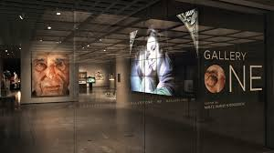
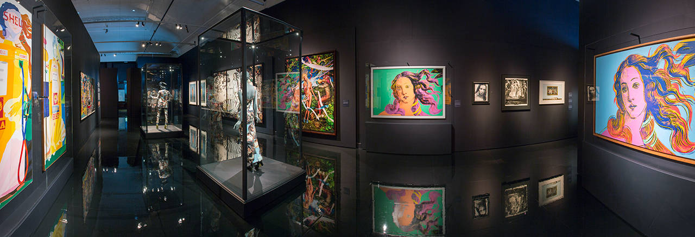

Mission Statement
MonoMuse explores the connection between art and modern technology through immersive exhibitions and interactive experiences. Our mission is to inspire curiosity and creativity by bringing together artists, technologists, students, and members of the community in a shared space for learning and discovery.
Through interactive installations, digital storytelling, and collaborative projects, the museum encourages visitors to explore how emerging technologies influence the way we create, experience, and understand art in the modern world.
Who We Serve
MonoMuse welcomes a diverse audience including students, artists, researchers, families, and technology enthusiasts. Our exhibitions are designed to be accessible to visitors with different levels of artistic and technical experience, allowing everyone to engage with creativity in meaningful ways.
The museum also partners with schools, universities, and community organizations to provide workshops, educational programs, and hands-on experiences that inspire the next generation of creative thinkers.
Founding Year
MonoMuse was founded in 2018 as a collaborative initiative between artists, technologists, and educators who wanted to create a space dedicated to exploring the relationship between digital innovation and artistic expression.
Milestones
- 2018: MonoMuse was founded with the goal of exploring art and technology.
- 2019: The museum opened its first digital art exhibition focused on interactive storytelling.
- 2021: MonoMuse hosted international artists and collaborative exhibitions.
- 2023: The museum expanded its educational programs and community workshops.
